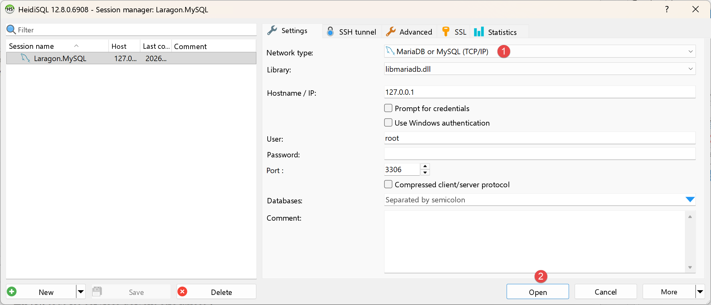
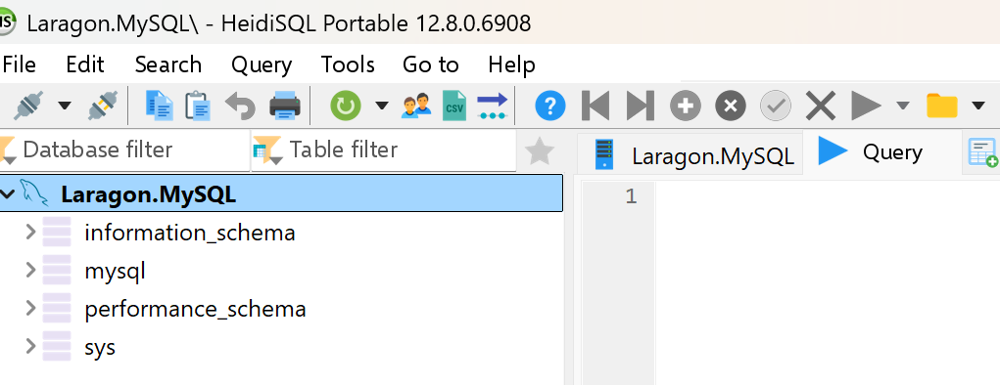
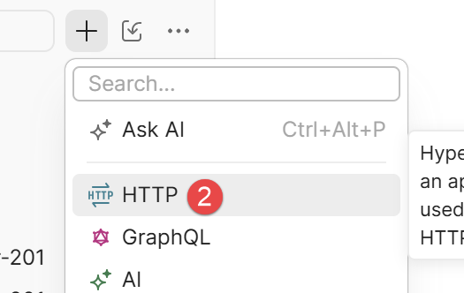
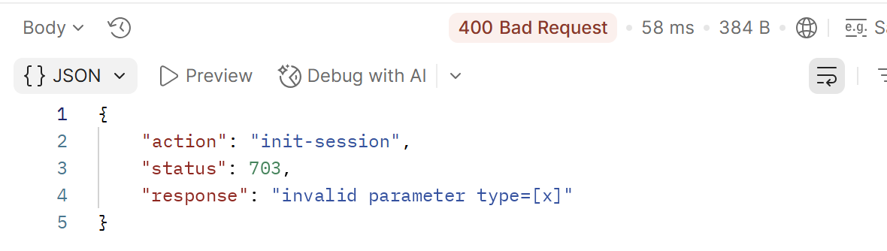
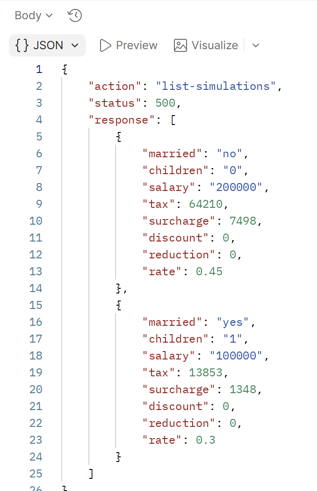
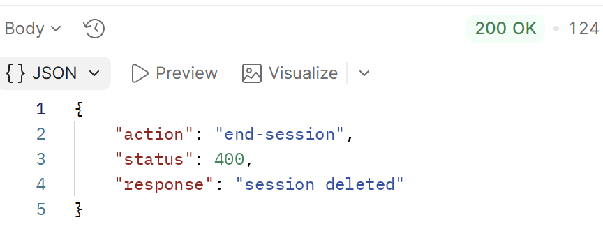

4. Installation eines NestJS-Servers
Hinweis: Im Folgenden wird gelegentlich auf einen PHP-Server verwiesen, nämlich den im Kurs [Introduction to the PHP7 Language Through Examples] genannten. Der NestJS-Server implementiert dieselben Services wie dieser PHP-Server.
Wir behandeln die HTTP-Funktionen von TypeScript – die Funktionen, mit denen sich ein Webserver abfragen lässt. Für unsere Tests benötigen wir einen Webserver. Wir verwenden den im Abschnitt „Fallstudie“ entwickelten Server: den Server zur Steuerberechnung in NestJS. Dieser Server stellt einen JSON-Dienst bereit, der folgende Services anbietet:
- [init-session] – GET main.php?action=init-session&type=json – teilt dem Server mit, dass wir JSON-Antworten wünschen;
- [authenticate-user] – POST main.php?action=authenticate-user: Die beiden per POST übermittelten Parameter [user, password] legen fest, ob die Verbindung zum JSON-Dienst autorisiert ist. Standardmäßig lauten die Zugangsdaten [admin, admin];
- [calculate-tax] – POST main.php?action=calculate-tax: Die per POST übermittelten Parameter [married, children, salary] dienen zur Berechnung einer Steuer:
- married: „yes“, wenn verheiratet, andernfalls „no“;
- children: Anzahl der Kinder des Steuerpflichtigen;
- salary: das Jahresgehalt des Steuerpflichtigen;
- [list-simulations] – GET main.php?action=list-simulations – listet die seit Beginn der Sitzung durchgeführten Simulationen auf;
- [delete-simulation] – GET main.php?action=delete-simulation&number=x – löscht die Simulation Nr. x aus der Liste der Simulationen;
- [get-admindata] – GET main.php?action=get-admindata – ruft die gesamte mit dem Server verbundene Datenbank als JSON-Objekt ab;
- [end-session] – GET main.php?action=end-session: beendet die Sitzung. Um eine neue zu starten, muss der Benutzer den oben beschriebenen Befehl „init-session“ ausführen;
Wir beschreiben nun die Installation dieses Servers. Wenn Sie diesen Server nicht installieren möchten, springen Sie direkt zum Abschnitt „Die HTTP-Funktionen von TypeScript“. Sie können die Skripte dann nicht in einer Live-Umgebung testen, aber den Code einsehen.
4.1. Laragon installieren
Stand September 2026 ist das Tool Laragon unter der URL [Download Laragon – Fast & Modern Dev Environment ] verfügbar. Laragon enthält Tools, mit denen sich ein PHP-Server und das DBMS MySQL installieren lassen:

- in [1] ein Apache-Webserver;
- in [2] das DBMS MySQL;
- in [3] ein Mail-Tool, das wir nicht verwenden werden;
- [4] startet alle Services (Apache, MySQL, MailPit);
- [5] zeigt die Webseite unter der URL [http://localhost] an. Standardmäßig verweist diese URL auf den Ordner <laragon-install>\www, wobei <laragon-install> der Installationsordner von Laragon ist;
- in [6] wird das Tool HeidiSQL gestartet, mit dem sich MySQL-Datenbanken verwalten lassen. Wir verwenden dieses Tool, um die vom Steuerberechnungsserver genutzte Datenbank anzulegen;
- In [7] wird ein Terminal geöffnet; alle für Laragon benötigten Binärdateien befinden sich im PATH;
- In [8] wird der Windows-Explorer im Ordner geöffnet, der der URL [http://localhost] zugeordnet ist;
Der Installationsordner von Laragon enthält folgende Elemente:
 |
- In [1] enthält der Ordner [bin] zahlreiche Anwendungen:
 |
- In [1] der Apache-Webserver;
- in [2] ein Kommandozeilen-Terminal;
- in [3] ein [git]-Client, mit dem sich verschiedene Versionen eines Projekts verwalten lassen;
- in [4] ein Datenbankmanager;
- [5], ein E-Mail-Manager;
- in [6] das DBMS MySQL;
- [7], ein weiterer Webserver;
- in [8] [node.js] zum Ausführen von JavaScript-Skripten;
- [9], ein Texteditor;
- in [10] der PHP-Interpreter;
- in [11] der [Python]-Interpreter;
- [12], ein Cache-Server;
Laragon bringt eine umfassende Entwicklungsumgebung mit. In diesem Kurs verwenden wir nur das DBMS MySQL [6] und [heidisql], um es grafisch zu verwalten;
4.2. Installation und Konfiguration des NestJS-Servers
Ein NestJS-Server für eine stark vereinfachte Steuerberechnung befindet sich im Ordner nestjs-case-study innerhalb des Skriptverzeichnisses dieses Kurses:
nestjs-case-study/
├── package.json
├── nest-cli.json
├── .env.example
├── create_dbtaxes.sql
├── src/
│ ├── main.ts
│ ├── main.controller.ts
│ ├── app.module.ts
│ ├── actions/
│ ├── config/
│ ├── entities/
│ ├── filters/
│ ├── model/
│ ├── responses/
│ ├── session/
│ └── utilities/
└── views/
Wenn Sie die Abhängigkeiten für den gesamten Verzeichnisbaum bereits installiert haben (mit npm install im Stammverzeichnis, über die npm-Workspaces , die in der Einführung dieses Dokuments beschrieben sind), enthält der Ordner nestjs-case-study bereits sein eigenes node\_modules. Andernfalls wechseln Sie in diesen Ordner und führen Sie aus:
Hinweis: Wenn Sie der in der Einführung beschriebenen Batch-Installation gefolgt sind (Ausführung von npm install im Stammverzeichnis von typescript-nestjs-course-scripts), ist dieser Schritt bereits erledigt: Fahren Sie direkt mit der folgenden Konfiguration fort.
Der Server benötigt eine .env-Datei, die die Verbindungseinstellungen für die von Laragon angelegte MySQL-Datenbank (siehe oben) sowie den Port festlegt, auf dem der Server lauscht. Kopieren Sie die mitgelieferte Datei .env.example nach .env und passen Sie sie dann an:
PORT=3000
TAX_DATA_SOURCE=mysql
DB_HOST=localhost
DB_PORT=3306
DB_NAME=dbtaxes-2019
DB_USER=admtaxes
DB_PASSWORD=pwdtaxes
CORS_ALLOWED=true
SESSION_SECRET=change-me-in-production
- PORT: der Port, auf dem der NestJS-Server lauscht (Standard ist 3000).
- TAX_DATA_SOURCE: mysql, um die unten angelegte Datenbank zu verwenden;
- DB_HOST, DB_PORT, DB_NAME, DB_USER, DB_PASSWORD: die Verbindungsparameter für die Datenbank dbtaxes-2019, die wir mit HeidiSQL anlegen werden (siehe unten) – dieselben Zugangsdaten wie in dem im obigen Verzeichnisbaum gezeigten Skript create_dbtaxes.sql definiert;
- CORS_ALLOWED: erlaubt CORS-Aufrufe (Cross-Origin) von einem TypeScript-Client, der auf einem anderen Port läuft.
- SESSION_SECRET: der Schlüssel zum Signieren des Sitzungs-Cookies – ändern Sie ihn, falls der Server jemals öffentlich zugänglich gemacht werden soll.
4.3. Datenbank anlegen
Um die vom NestJS-Server benötigte MySQL-Datenbank anzulegen, verwenden wir eine Option von Laragon:
 |
- In [1] müssen alle Services gestartet sein;
- in [2] ermöglicht die Option [Database] die Verwaltung der Datenbank;
Die Option [Database] startet ein Dienstprogramm namens HeidiSQL:
 |
- In [1] können Sie verschiedene DBMS auswählen. Der Standardwert ist das DBMS MySQL. Das ist in Ordnung;
- in [2] melden Sie sich bei HeidiSQL an;
 |  |
- In [1-2] führen Sie die SQL-Datei aus und wählen dann die Datei [create_dbtaxes.sql] aus, die Sie im Ordner [nestjs-case-study] finden:

Die Ausführung der Datei [2] legt die Datenbank [dbtaxes-2019] an, die vom Steuerberechnungsserver verwendet wird. Um sie anzuzeigen, drücken Sie in HeidiSQL F5, um die Anzeige zu aktualisieren:
 |
Die Datenbank [dbtaxes-2019] wurde angelegt.
4.4. NestJS-Server starten
Sobald die Datei .env vorhanden ist (und die Datenbank angelegt wurde), öffnen Sie ein Terminal im Stammverzeichnis des Ordners [nestjs-case-study], kompilieren Sie dann den Server und starten Sie ihn:
Für die Entwicklung mit automatischem Neustart nach jeder Änderung am Quellcode verwenden Sie:
In beiden Fällen zeigt die Konsole an:
[Nest] ... [NestFactory] Starting Nest application...
[Nest] ... [InstanceLoader] AppModule dependencies initialized
[Nest] ... [RoutesResolver] MainController {/}:
[Nest] ... [RouterExplorer] Mapped {/main.php, ALL} route
[Nest] ... [NestApplication] Nest application successfully started
Tax calculation server (NestJS) started on http://localhost:3000
JSON entry point: http://localhost:3000/main.php?action=init-session&type=json
HTML entry point: http://localhost:3000/main.php?action=init-session&type=html
Der NestJS-Server hat einen einzigen Einstiegspunkt (main.php, aus Kompatibilitätsgründen beibehalten, obwohl es sich hier um NestJS handelt), der alle Anfragen entgegennimmt, und einen Anfrageparameter „action“, der die durchzuführende Verarbeitung auswählt:
4.5. HTML-Tests für den Steuerberechnungsserver
Falls noch nicht geschehen, starten Sie alle Laragon-Services (für MySQL) sowie den NestJS-Server (npm run start:prod oder npm run start:dev; siehe oben). Rufen Sie dann in einem Browser die URL http://localhost:3000/main.php?action=init-session&type=html auf – das ist dieselbe init-session-Aktion wie beim PHP-Server, mit demselben type=html-Parameter, nur auf Port 3000:
 |
Die Zugangsdaten lauten admin/admin, genau wie beim PHP-Server – sie sind auf dieselbe Weise im Servercode definiert und nicht in config.json. Geben Sie sie ein:
 |
Füllen Sie das Formular aus und senden Sie es ab. Sie sehen die folgende Seite:
 |
Das Ergebnis der Steuerberechnung wird angezeigt – diese Seite verwendet tatsächlich die soeben angelegte Datenbank. Der Link „Liste der Simulationen“ im linken Menü zeigt den Verlauf der Berechnungen dieser Sitzung an:
 |
Wenn Sie diese Ergebnisse erhalten, funktioniert der NestJS-Steuerberechnungsserver korrekt mit seiner MySQL-Datenbank. Wir sind nun bereit, den Server mit TypeScript-Clients abzufragen. Dazu verwenden wir die JSON-Version des Servers.
4.6. Die JSON-API des Steuerberechnungsservers
4.6.1. Postman-Tests
Der PHP-Server wurde mit dem Desktop-Tool Postman getestet. Dieselbe Collection von Anfragen (tax-servers-tests.postman_collection.json, im Ordner nestjs-course enthalten) funktioniert identisch mit dem NestJS-Server: Die JSON-API ist exakt dieselbe – dieselben Aktionen, dieselben Parameter, dieselben Status-Codes. In Postman müssen Sie lediglich den Port jeder Anfrage ändern (80 → 3000) oder, einfacher, die Basis-URL in der Collection anpassen, falls Sie sie als Variable definiert haben.
Das Tool Postman ist unter der URL [https://www.postman.com/downloads/] verfügbar. Möglicherweise müssen Sie ein Konto erstellen.
Starten Sie alle Laragon-Services und öffnen Sie dann die Desktop-App Postman:
 |  |
- In [1-2] erstellen Sie eine HTTP-Anfrage an den Steuerberechnungsserver;
 |
- In [1] können Sie Ihrer HTTP-Anfrage einen Namen geben. Sie können sie speichern und wieder aufrufen;
- In [2]: Geben Sie die URL des Servers ein, den Sie abfragen möchten;
- in [3]: Wählen Sie den Typ der HTTP-Anfrage. Wir verwenden im Folgenden zwei davon: GET und POST;
- in [4]: Wenn Ihre Anfrage Parameter des Typs [?param1=val1¶m2=val2&…] hat, können Sie sie hier definieren;
- in [5]: Wenn der Anfragetyp POST ist, definieren Sie hier die gesendeten Werte;
In [nestjs-course] finden Sie eine Collection von HTTP-Anfragen an den Steuerberechnungsserver, die Sie in POSTMAN importieren können.

Gehen Sie wie folgt vor. Drücken Sie in Postman [Ctrl-O]:
 |
- Verwenden Sie den Link [1], um die Datei [tax-servers-tests.postman_collection.json] aus dem Ordner [nestjs-course] zu importieren:
 |
- In [1] der Name der importierten Collection;
- in [2] ihr Inhalt. Dies ist eine Liste von (HTTP-)Anfragen an den Steuerberechnungsserver (JSON);
Betrachten wir als Beispiel die Anfrage [init-session-json-700]. Sie startet eine JSON-Sitzung mit dem Server:
 |
- In [1] ist die HTTP-Anfrage ein GET;
- in [2] die abgefragte URL. Sie fordert an, einen JSON-Dialog mit dem Server zu beginnen;
- in [3-4] finden wir die Parameter des GET;
- in [5], um die Anfrage an den Steuerberechnungsserver zu senden;
Stellen Sie vor dem Senden der Anfrage sicher, dass Sie die Laragon-Services gestartet haben. Die JSON-Antwort des Servers lautet:
 |
Verwenden Sie nun die Anfrage [init-session-703]:

Die Anfrage [1-3] ist ungültig. Die Parameter müssen vom Typ [?action=xx&type=yy] sein, wobei „type“ „html“, „xml“ oder „json“ sein kann. Der Typ „x“ wird nicht erkannt. Die JSON-Antwort des Servers lautet:
 |
Senden Sie die Anfrage [init-session-json-700] erneut, um eine JSON-Sitzung neu zu starten. Senden Sie dann die Anfrage [authenticate-user-200], um sich zu authentifizieren:
 |
- In [1] ist die Anfrage ein POST;
- in [2] die URL der Authentifizierungsanfrage;
- in [3] der Body des POST, der die gesendeten Werte enthält;
- [4-5] die beiden gesendeten Werte. Dies sind die Zugangsdaten des Anwendungsadministrators. Sie sind in der Datei [config.service.ts] des Servers definiert;

Die JSON-Antwort des Servers lautet:
 |
Sobald Sie authentifiziert sind, können Sie eine Steuerberechnung durchführen. Verwenden Sie dazu die Anfrage [calculate-tax-300]:
 |
- In [1] handelt es sich um eine POST-Anfrage;
- in [2] die angeforderte URL;
- in [3-4] werden die drei Werte gesendet;
Die JSON-Antwort lautet:
 |
Führen Sie die Anfrage mehrmals aus und ändern Sie jedes Mal die gesendeten Werte. Führen Sie anschließend die Anfrage [list-simulations-500] aus, die die Liste der von Ihnen durchgeführten Simulationen anzeigt:
 |
- Die GET-Anfrage [1-4] hat nur einen Parameter: [action]. Die JSON-Antwort lautet:
 |
Dies ist die Liste der von Ihnen durchgeführten Simulationen.
Verwenden Sie die Anfrage [delete-simulation-600], um eine Simulation zu löschen:
 |
- In [2] wird die URL per GET abgefragt. Sie enthält zwei Parameter [action, number]. [number] ist die Nummer der Simulation, die Sie aus der Liste der Simulationen löschen möchten. Hier bezeichnet die Nummer 0 die erste Simulation der Liste;
Die JSON-Antwort des Servers lautet:
 |
Die JSON-Antwort ist die nach dem Löschen einer der Simulationen verbleibende Liste der Simulationen;
Schließlich können Sie die Sitzung mit der Anfrage [end-session-400] beenden:
 |
Die Anfrage-URL [1-2] hat nur den Parameter [action] (3). Die JSON-Antwort lautet:
 |
4.6.2. curl-Tests
Wir können auch das Tool [curl] verwenden, um die JSON-Services des Servers zu testen. Alle folgenden Anfragen verwenden dieselbe HTTP-Sitzung (die Option -b/-c cookies.txt von curl bewahrt das Sitzungs-Cookie zwischen den Aufrufen auf, genau wie es ein Browser oder Postman tun würde):
Starten wir eine JSON-Sitzung mit der Aktion [init-session]:
Der Statuscode 700 bestätigt, dass die Sitzung gestartet wurde – das ist derselbe Code, den auch der PHP-Server zurückgibt. Authentifizieren wir uns nun mit der Aktion [authenticate-user] – einer POST-Anfrage mit einem einzigen Parameter in der URL (action) und den gesendeten Zugangsdaten:
curl -b cookies.txt -c cookies.txt -X POST "http://localhost:3000/main.php?action=authenticate-user" \
-d "user=admin&password=admin"
{
"action": "authenticate-user",
"status": 200,
"response": "Authentication successful [admin, admin]"
}
Sie können nun mit der Aktion [calculate-tax] Steuern berechnen, wieder eine POST-Anfrage mit den drei gesendeten Parametern: Familienstand, Kinder und Gehalt:
curl -b cookies.txt -c cookies.txt -X POST "http://localhost:3000/main.php?action=calculate-tax" \
-d "married=yes&children=2&salary=45000"
{
"action": "calculate-tax",
"status": 300,
"response": {
"married": "yes",
"children": 2,
"salary": 45000,
"tax": 502,
"surcharge": 0,
"discount": 857,
"reduction": 126,
"rate": 0.14
}
}
Die Werte sind exakt dieselben (502 € Steuer, ein Abschlag von 857 €, eine Ermäßigung von 126 € und ein Satz von 14 %) wie die im vorigen Abschnitt im Browser angezeigten – die beiden Versionen, HTML und JSON, nutzen dieselbe Berechnungs-Engine. Die Liste der Simulationen erhält man mit der Aktion [list-simulations], einem einfachen GET:
{
"action": "list-simulations",
"status": 500,
"response": [
{
"married": "yes", "children": 2, "salary": 45000,
"tax": 502, "surcharge": 0, "discount": 857, "reduction": 126, "rate": 0.14
}
]
}
Führen Sie die Anfrage [calculate-tax] mehrmals mit geänderten gesendeten Werten aus, und verwenden Sie dann [delete-simulation] , um eine Simulation aus der Liste zu entfernen (&number=x bezeichnet ihre laufende Nummer), und [get-admindata] , um die gesamte Datenbank im JSON-Format abzurufen (Steuerstufen und Berechnungskonstanten). Beenden Sie schließlich die Sitzung mit der Aktion [end-session]:
Sie haben nun ein gutes Verständnis der JSON-API des NestJS-Steuerberechnungsservers – die exakt dieselbe ist wie die des PHP-Servers. Wir können nun dazu übergehen, TypeScript-Skripte zu schreiben, die diesen Server abfragen.